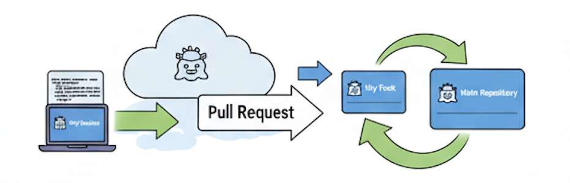
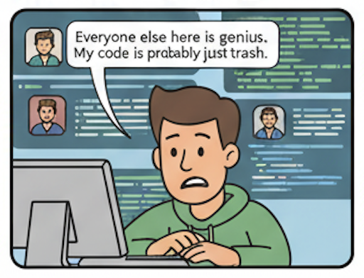

Diving into the World of
Open Source
By Rajani Karuturi
What is Open Source?
Software for which the original source code is made freely available and may be redistributed and modified.

Examples of Open Source
- Linux Operating System
- Mozilla Firefox Browser
- VLC Media Player
- Python, PHP, Ruby
- And many more!
Why Contribute?
- Improve your coding skills
- Build your portfolio and resume
- Learn to collaborate with developers globally
- Give back to the community
- It's fun!
How to Get Started?
Start with a project you already use or are interested in.
Look for "good first issue", "help wanted", or "beginner" labels in the issue tracker.

Finding Your First Bug
Many organizations have special labels for issues that are great for new contributors.
The Contribution Workflow
It might seem daunting at first, but it's a straightforward process.
1. Fork the Repository
Create a personal copy of the project on your GitHub account.

2. Clone Your Fork
Download the repository to your local machine.
git clone https://github.com/your-username/project-name.git
3. Create a New Branch
Create a separate branch for your changes. This keeps your work organized.
git checkout -b my-awesome-feature
4. Make Your Changes
Fix the bug or implement the new feature.

5. Commit and Push
Save your changes and upload them to your fork on GitHub.
git add .
git commit -m "feat: Add my awesome feature"
git push origin my-awesome-feature
6. Create a Pull Request
Propose your changes to the original project. This opens a discussion with the project maintainers.

Engaging with the Community
- Join the project's mailing list, chat room (Slack, Discord), or forum.
- Be respectful and patient.
- Ask questions!
- Don't be afraid of feedback on your PRs. It's a learning process.
Receiving Feedback
Maintainers might request changes. This is a normal part of the process. Don't be discouraged!

Don't Suffer from Imposter Syndrome
Everyone was a beginner once. The open source community is generally very welcoming.
About Me
Rajani Karuturi
- Software Engineer
- Open Source Enthusiast
- Find me on GitHub
- Twitter: @RajaniKaruturi